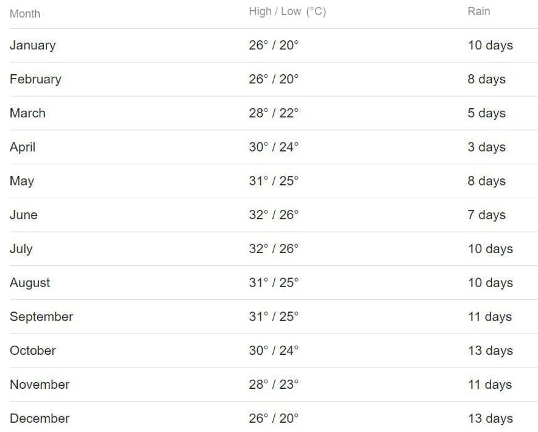

Batanes is an archipelago of islands located in the northernmost part of the Philippines. Due to its location, many have invaded the province ranging from foreign colonizers to natural disasters. Yet, it was able to maintain its quiet charm and natural beauty, making it one of the most dreamed about destinations in the country.
From verdant rolling hills to fascinating tribal communities, there are plenty of things to do in Batanes that will make a lasting impression on any visitor.
The Batanes group of islands lies in the northenmost part of the Philippines bordered by the Bashi Channel and Taiwan to the north, the Balintang Channel to the south, the Pacific Ocean to the east, and the South China Sea to the west.
This isolated province is home to the warm Ivatan people who thrive on the subtropical climate and mesmerizing rolling hills. Indigenous culture is celebrated through the preservation of traditional stone houses and way of life.
The best time to visit Batanes is during the dry or summer season. In the Philippines, the months of March, April, May, and June are considered the hottest months with minimal rainfall. These are also the best months to visit Batanes.
Fewer chances of rainfall mean fewer chances of delayed or canceled flights and you’ll be able to enjoy your trip better since Batanes tourist attractions are mostly outdoors.
Dry and Summer Season | March to JuneFor a hassle-free trip, it’s best to plan your Batanes adventure around the months of the dry and summer season in the Philippines. March to June has a minimal amount of rainfall.
But if you want to enjoy a “cooler” Batanes in terms of temperature, you can visit during the first quarter of the year. However, the weather can quickly change from sunny to cold and rainy.
Climate and WeatherYou can expect a warm tropical climate almost all year round in Palawan, except in the rainy season, usually around July to September. The month with the most rainfall is during September.
Batanes has a tropical climate like the rest of the Philippines. The average yearly temperature is 26.0 °C. April is the driest month, while August is the rainiest month so best to avoid traveling to Batanes during that time. November to February are the coldest and often have rainy days as well.

What to WearDuring the dry summer months, wear comfortable clothes with breathable fabric since you’ll be spending most of the time outdoors. Better bring your sunblock and umbrella to keep you shaded from the sun.
If you’re planning a trip in the rainy or cold months, bring an umbrella and raincoat/poncho to keep you dry. You might also want to bring extra clothes for a quick change during your tours.